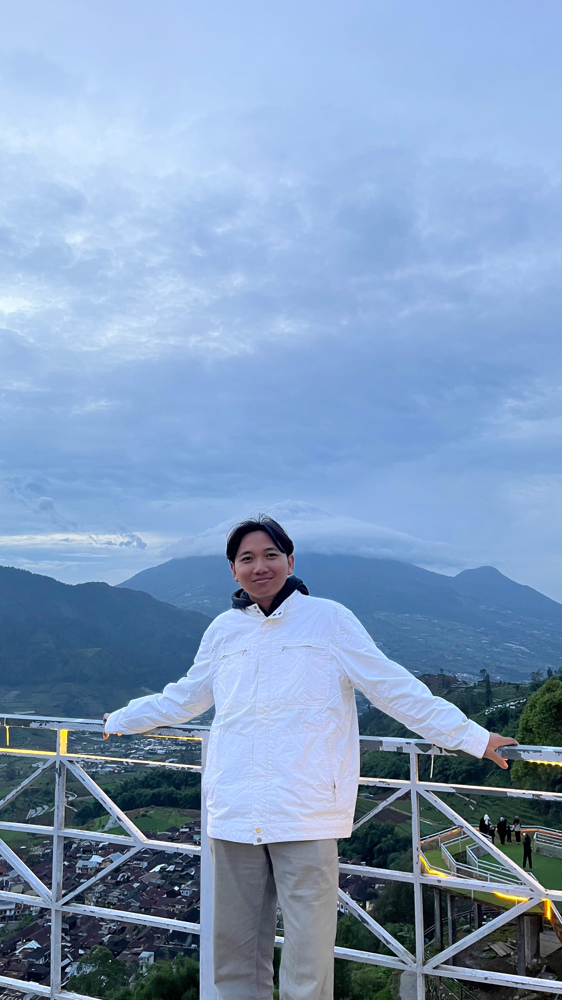
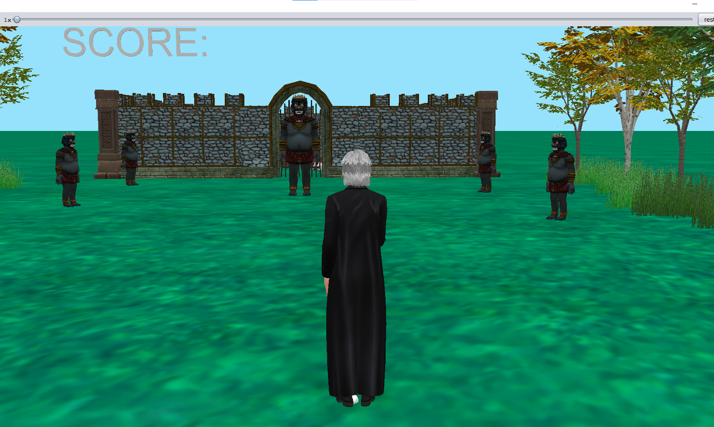
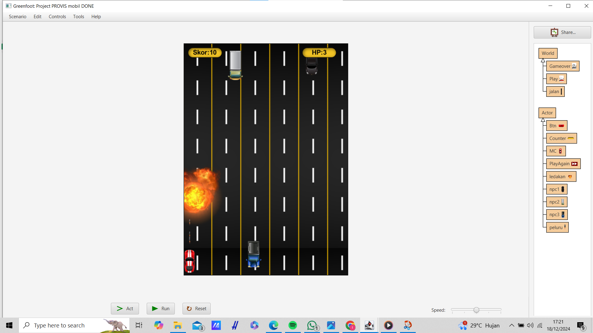
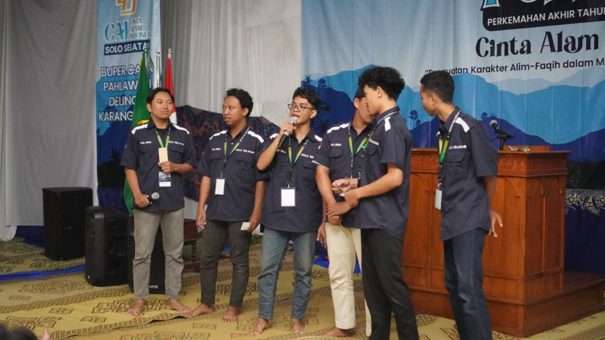
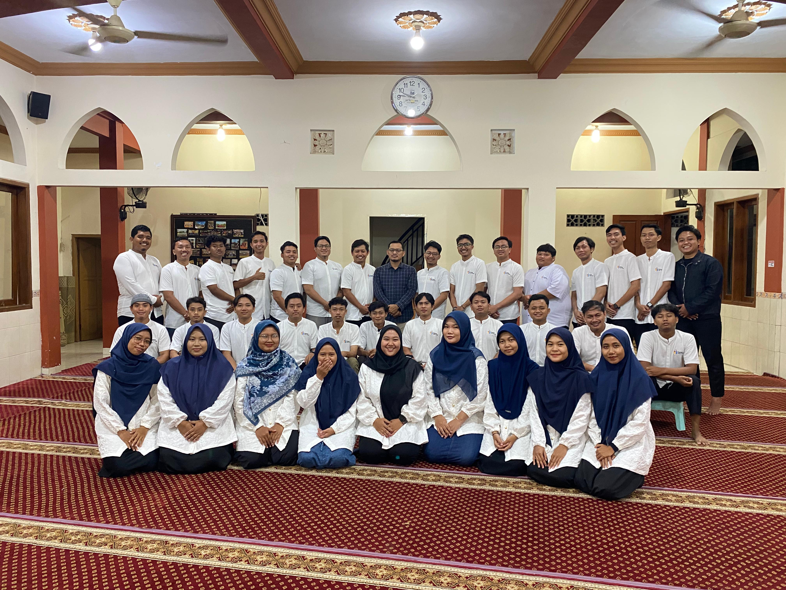

Hi
I'm Irsyad
Informatics Engineering Student & Frontend Developer
Saya adalah mahasiswa Teknik Informatika yang tertarik pada pengembangan website modern, desain antarmuka (UI), dan teknologi perangkat lunak. Saya senang mempelajari hal baru serta membuat website yang responsif, interaktif, dan mudah digunakan.

About Me
Frontend Developer
Saya memiliki minat dalam bidang Frontend Development dan sedang mempelajari HTML, CSS, JavaScript, PHP, serta database MySQL. Saya suka membuat tampilan website yang modern, responsive, dan nyaman digunakan di berbagai perangkat.
Selain belajar pengembangan web, saya juga aktif mengikuti kegiatan organisasi dan kepanitiaan untuk meningkatkan kemampuan komunikasi, kerja sama tim, dan kepemimpinan.
My Projects

Alice Adventure Game
Game petualangan tentang Penyihir yang melawan para raksasa untuk mendapatkan harta karun tersembunyi di dalam kastil.

Greenfoot Car Shooter
Game mobil menembak menggunakan Greenfoot, di mana pemain dapat bergerak ke kanan dan kiri serta menembak untuk menghindari tabrakan.
Organization Experience

Sie P3K — Perkemahan CAI 2024
Bertugas membantu menangani peserta dan panitia yang mengalami gangguan kesehatan selama kegiatan perkemahan berlangsung.

Sie Acara — Perkemahan CAI 2025
Membantu menyusun konsep, susunan kegiatan, dan jalannya acara agar kegiatan perkemahan berjalan dengan baik.

Sie Bazar — Festival Anak Sholeh 2025
Bertanggung jawab dalam penyediaan stand bazar serta membantu proses pendaftaran peserta stand.
Contact Me
Terima kasih telah mengunjungi website portofolio saya. Jika Anda memiliki pertanyaan, kerja sama, atau ingin berdiskusi mengenai project, silakan hubungi saya melalui form atau informasi kontak di bawah ini.
Saya akan berusaha merespons pesan secepat mungkin. Terima kasih atas perhatian dan kunjungannya.